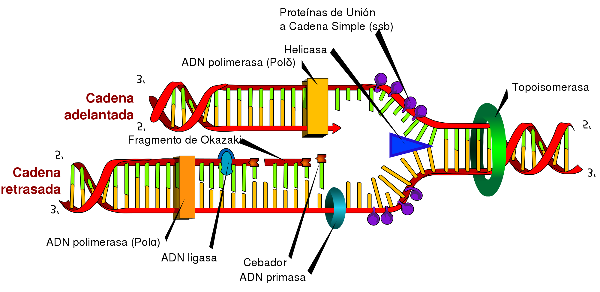

La base de la vida
El ADN como base de la vida
En la actualidad, sabemos que el ADN es la molécula portadora de la información genética, pero esto es un conocimiento muy reciente en la historia de la ciencia.
La molécula de ADN fue aislada por primera vez por Friedrich Miescher en 1869 (Miescher 1871). Al encontrarse únicamente en los núcleos de las células, a esta sustancia se la llamó nucleína. Poco después se descubrió que la nucleína era una molécula ácida, por lo que pasó a llamarse ácido nucleico; y más tarde se denominó ácido desoxirribonucleico (ADN) para diferenciarlo del ácido ribonucleico (ARN).
En 1885, el científico alemán Albertch Kossel (Kossel, A. 1885. Untersuchungen über die Nukleine und ihre Spaltungsprodukte) consiguió aislar el ADN de las proteínas asociadas a él, siendo capaz de determinar los nucleótidos que lo conforman. Estudios posteriores trataron de definir si la información genética se encontraba en las proteínas asociadas al ADN o en el ADN en sí. En principio, se supuso que las proteínas serían las encargadas de transmitir la información ya que eran más complejas, mientras que el ADN, al poseer solo cuatro nucleótidos, sería demasiado simple para cumplir con esta función. Sin embargo, diversos experimentos realizados a principios del siglo XX demostraron que es el ADN la molécula portadora de la información genética hereditaria.
Uno de los experimentos más destacados en este punto fue el de Frederick Griffith (Avery, O.; McLeod, C. & McCarty, M. 1944. Studies on the Chemical Nature of the Substance Inducing Transformation of Pneumococcal Types: Induction of Transformation by a Desoxyribonucleic Acid Fraction Isolated from Pneumococcus Type III. Journal of Experimental Medicine. 79: 137-158) quien inyectó diferentes cepas de bacterias en ratones. La cepa S era dañina y mataba al ratón mientras que la cepa R no era virulenta y no mataba al ratón. Griffith comprobó que al calentar la cepa S, esta dejaba de ser dañina y no mataba al ratón. Sin embargo, al mezclar la cepa S calentada (no dañina) con la cepa R (no dañina) el ratón sí moría. Griffith comprobó que esto ocurría porque había una transferencia del ADN de las bacterias de la cepa S a la R.
Introducción a la genética molecular
La información del ADN está codificada en la secuencia de sus bases nitrogenadas. Esta información fluye y se transmite en dos sentidos diferentes:
• A partir del ADN, se obtienen nuevas moléculas de ADN porreplicación. Este proceso tiene lugar durante la etapa S del ciclo celular y permite la transmisión de la información de célula a célula, mediante la mitosis, y de individuo a individuo, por medio de la reproducción.
• Por transcripción, se obtienen moléculas de ARNm que contienen información del ADN. Mediante la traducción del ARNm, esta información determina la síntesis de las proteínas.
Este flujo de información constituye el dogma central de la biología molecular. Fue publicado en 1970 por Francis Crick y ha sido la base de los grandes avances en el conocimiento de la genética molecular que se han realizado desde entonces. Este dogma central ha sido ampliado posteriormente con dos puntos referentes a los virus:
• La transcripción inversa: Algunos virus, llamados retrovirus, pueden sintetizar ADN a partir del ARN vírico, mediante la enzima transcriptasa inversa. Este es el caso del virus de la inmunodeficiencia humana (VIH).
• La replicación del ARN vírico, que llevan a cabo las enzimas replicasas.
Flujo de información a partir del ADN en la célula eucariota
• Dentro del núcleo celular se produce la replicación del ADN y la transcripción para obtener moléculas de ARNm a partir del ADN.
• La traducción tiene lugar en los ribosomas del citoplasma. Una vez sintetizadas, las proteínas inician su actividad dentro de la célula.
• La replicación, la transcripción y la traducción están controladas por un conjunto de enzimas muy específicas que llevan a cabo una función extraordinariamente precisa.
{kind=link}
La replicación del ADN
Mediante la replicación, se obtienen dos copias idénticas a partir de una doble cadena inicial de ADN. Francis Crick y James Watson (Watson, J. & Crick, F. 1953. A structure for deoxyrribose nucleic acid. Nature 171: 737-738), al mismo tiempo que dedujeron la estructura del ADN, propusieron un mecanismo para la replicación de esta molécula. Teniendo en cuenta la importancia de la conservación de la secuencia de bases original, consideraron posible que las dos cadenas de la doble hélice se separasen y cada una sirviese de molde para la síntesis de otra complementaria. De este modo, se obtendrían dos dobles hélices, cada una con una cadena vieja, o parental, y otra cadena nueva, o hija. Los trabajos experimentales posteriores confirmaron esta hipótesis, denominada semiconservativa.
La replicación del ADN tiene lugar mediante una reacción de síntesis:
\[ (dNMP)_{n} + dNTP (dNMP)_{n+1} + PP_{i} \] • A partir de uno o diversos (n) desoxirribonucleótidos monofosfato (dNMP) de la cadena en formación, se produce la incorporación de un desoxirribonucleótido trifosfato (dNTP).
• De esta unión se desprende pirofosfato inorgánico (PPi) y se obtiene una cadena con un desoxirribonucleótido más, incorporado al fragmento inicial (n + 1).
La reacción de unión de los nucleótidos es reversible, pero se ve favorecida en el sentido de la síntesis, ya que el PPi es rápidamente degradado.
En la replicación del ADN intervienen las siguientes enzimas:
• ADN polimerasas (ADN pol), enzimas con dos funciones distintas:
—Tienen actividad polimerasa; es decir, catalizan la unión de nucleótidos en la cadena de ADN.
—Tienen actividad exonucleasa; es decir, catalizan la rotura de los enlaces entre los nucleótidos cuando las moléculas tienen un extremo libre.
• ARN polimerasas (ARN pol): Enzimas que catalizan la formación de cadenas de ARN.
• Topoisomerasas y girasas: Enzimas que adaptan la estructura espacial de la doble hélice a las necesidades del proceso de síntesis.
• Ligasas: Sellan las uniones entre fragmentos de cadenas.
El proceso de replicación se conoce detalladamente en procariotas, en especial en el caso de la bacteria Escherichia coli.

Replicación en procariotas
Se han identificado tres tipos de ADN polimerasas:
• ADN pol I, que actúa con:
—Actividad polimerasa, catalizando la unión de nucleótidos en sentido 5’ 3’.
—Actividad exonucleasa en sentido 5’ 3’ y en sentido 3’ 5’.
• ADN pol II, que presenta:
—Actividad polimerasa en sentido 5’ 3’.
—Actividad exonucleasa en sentido 3’ 5’.
• ADN pol III, que actúa con:
—Actividad polimerasa en sentido 5’ 3’.
—Actividad exonucleasa en sentido 3’ 5’.
Cada enzima interviene en diversas fases del proceso, el cual se inicia del modo siguiente:
• Existe un punto de la doble hélice en el que se ha de iniciar la replicación. A este punto lo conocemos como origen de replicación (O).
A partir del origen de replicación, se formará una horquilla de replicación en la que el ADN modifica su estructura espacial. En la formación de la horquilla intervienen:
—Las enzimas topoisomerasas como, por ejemplo, la girasa, que desespiralizan el ADN.
—Las helicasas, que separan las dos cadenas de la doble hélice.
—Un grupo de proteínas llamadas SSB (single strandbinding), que estabilizan cada una de las cadenas sencillas.
• Se inicia la síntesis del nuevo ADN y la horquilla va progresando y se ensancha hacia los lados.
El proceso se desarrolla venciendo dos dificultades:
—Las ADN pol no pueden iniciar la síntesis de ADN sin un fragmento preexistente de cadena.
—Las ADN pol solo pueden incorporar nucleótidos a la cadena en sentido 5’ 3’, ya que la reacción necesita extremos 3’ libres.
Estas limitaciones hacen que la síntesis de las dos cadenas hijas se desarrolle de manera diferente, según se trate de la cadena conductora o bien de la cadena retardada.
Veamos, a continuación, el proceso distinguiendo la síntesis del ADN a partir de la cadena conductora y a partir de la cadena retardada.
• Síntesis apartir de la cadena conductora El primer paso es la formación de un segmento de cadena que permita la actividad de la ADN pol.
—La ARN pol es capaz de catalizar la unión de ribonucleótidos sin necesidad de la existencia de cadenas ya iniciadas. Por ello, esta enzima, también denominado primasa, sintetiza un fragmento de molécula de ARN que lo conocemos como cebador.
—A continuación, la ADN pol III alarga este fragmento inicial polimerizando la unión de desoxirribonucleótidos según la ley de complementariedad de bases: la adenina es complementaria de la timina, y la citosina, de la guanina.
—Después, la ADN pol I actúa como exonucleasa en sentido 5’ 3’ y elimina el cebador, a la vez que actúa como polimerasa y llena el vacío con desoxirribonucleótidos.
—A continuación, la ligasa sella la unión entre los dos fragmentos de ADN.
• Síntesis a partir de la cadena retardada. Paralelamente al proceso anterior, la cadena retardada sirve de molde para la síntesis de su complementaria.
Pero, en tal caso, la necesidad de extremos 3’ libres de la ADN pol III origina un mecanismo diferente:
—La primasa sintetiza diversos cebadores.
—La ADN pol III alarga los fragmentos de cebador incorporando nucleótidos en sentido 5’ 3’. Estos pequeños fragmentos tienen entre 1000 y 2000 nucleótidos de longitud y los denominamos fragmentos de Okazaki, el nombre de su descubridor.
—Posteriormente, la ADN pol I sustituye los cebadores por desoxirribonucleótidos.
—Por último, la ligasa sella las uniones entre los fragmentos independientes para constituir una cadena sin discontinuidades.
La síntesis a partir de la cadena conductora se produce con un solo cebador y ocurre de manera continua.
En cambio, la síntesis a partir de la cadena retardada se produce con numerosos cebadores y, además, es discontinua.
Mientras se van incorporando los nucleótidos a las cadenas en formación, la ADN pol I recorre las cadenas para comprobar que los nuevos nucleótidos se emparejan correctamente con sus complementarios.
En caso de que se produzca un emparejamiento erróneo, la ADN pol I detiene la síntesis y, con su actividad exonucleásica 3’ 5’, corta el enlace del nucleótido erróneo a la cadena y coloca el nucleótido adecuado.
Replicación en eucariotas
En los organismos eucariotas, la replicación del ADN presenta numerosas coincidencias respecto a la replicación en los procariotas. No obstante, existen diferencias destacables:
El proceso previo al inicio de la replicación requiere el desempaquetamiento de estructuras espaciales más complejas que en el caso de las procariotas.
Las células eucariotas contienen mucho más ADN que las procariotas. Por este motivo, existen numerosos puntos de inicio de la replicación a lo largo de cada cromosoma, lo cual permite acelerar el proceso. Por ello, se forman numerosas horquillas de replicación.
Los fragmentos de Okazaki tienen una extensión menor que en las células procariotas, aproximadamente entre cien y doscientos nucleótidos.
El ADN de las células eucariotas no está cerrado sobre sí mismo, como el de las células procariotas, sino que es lineal. Tal y como hemos indicado en el apartado anterior, al eliminar los ARN cebadores de los extremos de las cadenas quedaría una cadena incompleta. La enzima telomerasa alarga los extremos de los cromosomas para evitar la pérdida de material genético durante la replicación.
La transcripción
La transcripción es el proceso por el que se sintetizan moléculas de ARN complementarias a una de las dos cadenas de una doble hélice de ADN.
Durante la transcripción, la secuencia de bases del ADN determina la incorporación de los ribonucleótidos.
La transcripción de ADN a ARN es una reacción de síntesis:
\[ (NMP)_{n} + NTP (NMP)_{n+1} + PP_{i} \]
• A partir de uno o varios (n) ribonucleótidos monofosfato (NMP) de la cadena en formación, se produce la incorporación de un ribonucleótido trifosfato (dNTP).
• De esta unión se desprende pirofosfato inorgánico (PPi) y se obtiene una cadena con un ribonucleótido más, incorporado al fragmento inicial (n + 1).
Los ribonucleótidos que intervienen en
• La incorporación de ribonucleótidos en sentido 5’ 3’. Como ya hemos visto, a diferencia de la ADN pol, esta enzima cataliza la unión de los ribonucleótidos sin necesidad de cebador.
Los ribonucleótidos que intervienen en la reacción son los correspondientes a las bases adenina, citosina, guanina y uracilo. La adenina del ADN es complementaria de la base uracilo, en el ARN.
La principal enzima responsable de la transcripción es la ARN polimerasa (ARN pol), que participa en dos procesos diferentes:
• La separación de las dos cadenas de la doble hélice.
• La incorporación de ribonucleótidos en sentido 5’ 3’. Como ya hemos visto, a diferencia de la ADN pol, esta enzima cataliza la unión de los ribonucleótidos sin necesidad de cebador.
La transcripción en procariotas
En procariotas, la transcripción se lleva a cabo bajo el control de una sola ARN pol. En este proceso suelen distinguirse tres fases: inicio, elongación y terminación.
Inicio
En la cadena de ADN hay unas secuencias especiales que reciben el nombre de secuencias promotoras o promotores.
Estas secuencias se sitúan antes del primer nucleótido que debe ser transcrito y que identificaremos como nucleótido +1. Las secuencias promotoras suelen situarse, aproximadamente, centradas en la posición –35 y –10, anteriores al nucleótido +1.
La secuencia de nucleótidos de los promotores depende de cada organismo, pero en Escherichia coli se han observado coincidencias importantes: en general, la secuencia –35 corresponde a una combinación de nucleótidos similar a TTGACA, y la secuencia –10 se corresponde habitualmente con la secuencia TATATT.
La ARN pol se asocia a una subunidad proteica conocida como subunidad sigma y reconoce la secuencia –35, a la que se une.
Esta unión facilita la posterior unión del enzima a la secuen- cia –10, mucho más próxima al inicio de la transcripción.
A continuación, se desprende la subunidad sigma. En ese momento, la ARN pol se encuentra en la posición correcta para separar las dos cadenas de ADN e iniciar la transcripción a partir del nucleótido +1.
Elongación
A partir de la unión correcta de la ARN pol, esta enzima inicia la síntesis con la incorporación del primer ribonucleótido, según la norma de complementariedad de bases.
La síntesis progresa en sentido 5’ 3’ y el ARN se mantiene unido al ADN en un pequeño fragmento de unos veinte a treinta nucleótidos a partir del extremo en crecimiento.
El resto de la cadena en crecimiento se disocia tanto de la enzima como del ADN.
La transcripción se desarrolla de manera continua, pero con velocidad variable, ya que, en ocasiones, la formación de estructuras espaciales, tanto en el ADN como en el ARN, puede dificultar el avance de la ARN pol.
Suelen transcribirse entre veinte y cincuenta nucleótidos cada segundo.
Terminación
Es posible que existan diversos mecanismos para indicar el fin de la transcripción.
Algunos de estos mecanismos se relacionan con la formación de bucles en la molécula de ARN que impiden el progreso de la ARN pol y provocan el desprendimiento del ADN.
Es el caso de las secuencias de terminación formadas por dos fragmentos de ADN próximos, que contienen secuencias complementarias entre ellas.
Al transcribirse estas secuencias, se produce complementariedad interna en la molécula de ARN en formación y, por tanto, aparecen bucles que obligarían a finalizar la síntesis de ARN.
La transcripción en eucariotas
Durante el proceso, podemos distinguir las mismas fases que en procariotas, pero con algunas particularidades.
Inicio
En eucariotas, las secuencias promotoras o promotores se sitúan, aproximadamente, en la posición –25, o sea, a unos veinticinco nucleótidos del lugar de inicio de la síntesis de ARN.
Esta secuencia ha sido identificada para numerosos genes y en numerosas especies, y observamos una elevada coincidencia en la secuencia TATA; por este motivo, la llamamos caja TATA (TATA box).
Las proteínas llamadas factores de transcripción (TF, del inglés transcriptionfactors) identifican las cajas TATA y se unen a ellas para facilitar la ubicación correcta de la ARN pol sobre la cadena de ADN. A continuación, se inicia la síntesis de ARN a partir del nucleótido +1.
En las células eucariotas, hay tres clases de ARN polimerasas especializadas en la síntesis de diferentes tipos de ARN:
• La ARN pol interviene en la síntesis de las subunidades grandes de los ribosomas.
• La ARN pol II es la responsable de la síntesis de los precursores de los ARN mensajeros (ARNm), que se traducirán a proteínas.
• La ARN pol III controla la síntesis de los ARN de transferencia (ARNt) y de las subunidades pequeñas de los ribosomas.
Generalmente, cada ARN pol identifica unos factores de transcripción específicos. Ahora, seguiremos la descripción del proceso en el caso de la síntesis de un ARNm.
A pesar de que los detalles del proceso no son del todo conocidos, posiblemente la misma ARN pol II provoca un cambio de conformación en el ADN que permite el acceso a una de las dos cadenas para copiarla, y se inicia la síntesis de ARN.
Elongación
La ARN pol II va recorriendo la doble hélice y utiliza como molde una de las dos cadenas.
Esta cadena se va leyendo desde el extremo 3’ hacia el 5’.
Al mismo tiempo, se van uniendo los ribonucleótidos, uno tras otro, y la cadena va creciendo en sentido 5’ 3’.
Los ribonucleótidos se sitúan según la ley de complementariedad de bases, teniendo en cuenta que el ribonucleótido complementario de la adenina del ADN es el uracilo en el ARN. A medida que se va desprendiendo la cadena de ARNm precursor acabada de sintetizar, el ADN recupera su estructura espacial normal.
Terminación
La terminación se produce de modo similar al mecanismo que hemos descrito para las células procariotas. Al ARNm precursor resultante la llamamos transcrito primario.
El proceso de síntesis de los otros ARN también se lleva a cabo de un modo parecido. No obstante, el transcrito primario sufre una serie de modificaciones que describimos a continuación.
Modificaciones postranscripcionales del ARN
Las principales modificaciones en el transcrito primario tras su síntesis son:
• Incorporación de una capucha: Por el extremo 5’, el transcrito primario incorpora un nucleótido de guanina metilado, que actúa como protección para evitar que el ARN sea degradado por enzimas especializadas en la destrucción de estas moléculas.
Esta capucha se añade poco después de la síntesis del extremo 5’ y mucho antes de finalizar la transcripción.
• Incorporación de una cola: En el extremo 3’ se añade una cadena de entre cien y doscientos nucleótidos de adenina, que llamamos cola de poli-A.
Esta cola puede tener como finalidad proteger también este extremo de la molécula frente a la degradación enzimática. Además, es posible que intervenga en el paso del ARNm hacia el citoplasma.
La cola de poli-A se añade al finalizar completamente la transcripción, después de que el tránscrito primario se haya desprendido del ADN y de la ARN pol II. Solo los ARN transcritos a partir de la ARN pol II tienen capucha y cola.
• Eliminación de los intrones: Los genes eucariotas para ARN contienen dos tipos de secuencias:
— Exones: Secuencias codificadoras que darán lugar a la incorporación de aminoácidos durante la síntesis de proteínas.
— Intrones: Secuencias no codificado- ras que no llegan a traducirse en aminoácidos.
El tránscrito primario contiene las secuencias de los exones y las de los intrones. Para que el mensaje que contiene el ARN pueda transformarse en la proteína correcta, es preciso que se eliminen las secuencias correspondientes a los intrones.
Este proceso de maduración tiene lugar mediante una reacción de corte y unión (ARN splicing).
— A lo largo de la cadena de ARN transcrito, se forman bucles correspondientes a los intrones.
— Diversas enzimas producen el corte de estas secuencias y la unión entre los exones.
— El resultado del splicing es el ARNm.
A continuación, el ARNm se desplaza hacia el citoplasma para la síntesis de proteínas. Este transporte se produce gracias al reconocimiento específico por parte de proteínas situadas en los poros de la envoltura nuclear que, mediante transporte activo, permiten el paso del ARNm.
El ARNr y el ARNt, transcritos mediante las enzimas ARN pol I y ARN pol III, experimentan un proceso de maduración algo diferente, que incluye la adquisición de su configuración espacial correcta. Posteriormente, salen al citoplasma e intervienen, también, en la síntesis de proteínas.
La traducción
El ciclo celular es el conjunto de etapas por las que pasan todas las células durante las cuales la célula crece aumentando su tamaño y su número de orgánulos y, por último, se divide para originar dos células más pequeñas.
Es el proceso mediante el cual a partir del ARNm se sintetiza una proteína. Tiene lugar de manera similar en procariotas y en eucariotas. Describiremos la traducción tomando como ejemplo una célula eucariota. El proceso se inicia a partir de:
• Un ARNm procedente de la maduración del transcrito primario.
• Ribosomas libres en el citoplasma con su configuración correcta.
• ARNt unidos a los diferentes aminoácidos.
Este proceso se considera una verdadera traducción, ya que el mensaje, contenido en el ARNm a partir de una copia del ADN, se traduce en una secuencia de aminoácidos. El código genético es la clave que permite interpretar el mensaje.
El código genético
El código genético es la correspondencia que se establece entre cada grupo de tres nucleótidos consecutivos de la cadena de ARNm y un aminoácido. A estos grupos de tres nucleótidos o tripletes, los llamamos codones. El código genético es universal; es decir, en todos los seres vivos, cada triplete codifica para el mismo aminoácido.
Además, se dice que está degenerado, ya que existen 64 posibles tripletes y solo 20 aminoácidos diferentes, es decir, hay aminoácidos que están codificados por más de un triplete. Existen unos tripletes especiales:
• AUG, que codifica para metionina y corresponde al inicio de la síntesis.
• UAA, UGA y UAG, que determinan el fin de la síntesis.
A continuación, describiremos las distintas fases del proceso de traducción y síntesis de una proteína a partir del ARNm correspondiente.
Unión de los aminoácidos a los ARNt
La figura representa la forma habitual que adquieren las moléculas de ARNt. En esta estructura, distinguimos una región especial que contiene un triplete llamado anticodón. Esta secuencia es específica para cada aminoácido y determina la unión entre cada ARNt y un aminoácido, para formar un aminoacil-ARNt.
La unión está catalizada por un conjunto de enzimas que reciben el nombre de aminoacil-ARNt sintetasas.
Existe una enzima aminoacil-ARNt sintetasa para cada aminoácido; son, por lo tanto, enzimas con una función muy especializada, ya que reconocen cada aminoácido y lo unen específicamente al extremo 3’ del ARNt que contiene el anticodón correspondiente.
Ensamblaje del complejo de iniciación
El complejo de iniciación está formado por un ribosoma, el aminoacil-ARNt correspondiente al primer aminoácido, y el ARNm que se tiene que traducir.
La unión de los diferentes componentes tiene lugar de este modo:
— El ARNt que transporta el aminoácido metionina se une a la subunidad pequeña del ribosoma.
— El extremo 5’ del ARNm que contiene el codón correspondiente a metionina (AUG) se une también a la subunidad pequeña del ribosoma. El ARNm se «leerá» en sentido 5’ 3’.
— En esta posición quedan enfrentados el anticodón del aminoacil-ARNt y el codón del ARNm. Para que el proceso se inicie correctamente, los dos tripletes tienen que ser complementarios: UAC en el anticodón del ARNt y AUG en el codón del ARNm.
— Al complejo recién formado se une la subunidad grande del ribosoma. En ese momento queda constituido el complejo de iniciación.
— Todas las interacciones moleculares que hacen posible la formación de este complejo son favorecidas por la acción de un conjunto de proteínas llamadas factores de iniciación.
Elongación de la cadena de aminoácidos
A partir de la formación del complejo de iniciación, distinguimos en el ribosoma dos sitios activos:
—El sitio P, o sitio de unión del peptidil-ARNt (el ARNt unido al péptido en crecimiento).
—El sitio A, o sitio de unión del aminoacil-ARNt.
Al inicio de la síntesis, el sitio P (sitio peptidil) está ocupado por el primer aminoacil-ARNt y el primer codón del ARNm; aquí se produce la unión entre las bases complementarias de ambas moléculas.
A continuación, en el sitio A se sitúa el siguiente aminoacil-ARNt y, en esta posición, su anticodón queda situado delante del segundo codón del ARNm.
Seguidamente, se produce el enlace peptídico entre el primer y el segundo aminoácidos.
Una vez unidos los dos aminoácidos, el ribosoma se desplaza al codón siguiente.
— Se desprende el ARNt que transportaba metionina y el primer codón del ARNm queda fuera del ribosoma.
— El complejo ARNt-ARNm que estaba en el sitio A ahora quedará situado en el sitio P.
— En el sitio A (sitio aminoacil) queda el tercer codón del ARNm accesible al aminoacil-ARNt que presenta el anticodón complementario al siguiente codón de ARNm.
— A continuación, se produce el enlace peptídico entre el segundo y el tercer aminoácidos, y se repite todo el proceso.
De esta manera, se van añadiendo, uno a uno, los aminoácidos que componen la proteína codificada.
Terminación de la síntesis
Cuando el sitio A del ribosoma se sitúa frente a un codón de terminación (UAA, UGA, UAG), no se encuentra ningún ARNt específico para este codón.
En este momento se produce la unión de proteínas específicas que favorecen la disociación del complejo de iniciación:
— La proteína recién sintetizada se separa del último ARNt.
— El ARNm se desprende del ribosoma.
— Las dos subunidades del ribosoma se separan.
Es muy frecuente que un mismo ARNm pueda ser traducido a la vez por distintos ribosomas, situados en diferentes posiciones a lo largo de la cadena. A estas estructuras las llamamos polirribosomas o polisomas.
En los polisomas se sintetizan varias copias de la misma cadena polipeptídica a partir de una misma molécula de ARNm y diversos ribosomas.
Control de la expresión genética
Los eficaces procesos descritos en el tema anterior adquieren su total importancia fisiológica cuando las células pueden activarlos o reprimirlos, según las necesidades biológicas que presenten.
Por ello, existen mecanismos de control que permiten regular la expresión de los genes. Por medio de estos mecanismos se sintetizan unas proteínas cuando la célula las necesita y se dejan de sintetizar cuando no son necesarias.
A mediados del siglo XX, François Jacob y Jacques Monod (Jacob, F. & Monod, J. 1961. Genetic regulatory mechanisms in the synthe- sis of proteins. Journal of Molecular Biology 3: 318-356) describieron un mecanismo de control en los procariotas: el operón.
Un operón es un conjunto de genes estructurales que se expresan de manera coordinada; suelen corresponder a genes que codifican para distintas enzimas de una misma vía metabólica. Las secuencias de ADN que encontramos en el operón y asociadas a él son:
• Un gen regulador, que determina la síntesis de la proteína represora.
• Una secuencia promotora, o promotor, como las que ya hemos descrito al hablar de la transcripción, que se sitúa unos pocos nucleótidos antes del punto de inicio de la síntesis de ARNm.
• Un operador, una secuencia que puede ser bloqueada por una proteína represora.
• Los genes estructurales, que codifican la síntesis de las proteínas que actúan coordinadamente.
El primer operón que se estudió exhaustivamente fue el operón lac de Escherichia coli. Este regula la síntesis de las enzimas que controlan la degradación de la lactosa. E. coli utiliza, preferentemente, la glucosa como fuente de carbono y de energía; no obstante, también puede usar lactosa. Por lo tanto, dado que esta utilización es ocasional, constituye un importante ahorro biológico para la célula.
De este modo, la célula controla la expresión de los genes del operón:
• En ausencia de lactosa:
— El gen regulador se transcribe y se sintetiza la proteína represora.
— La proteína represora se une al operador. Como este se encuentra junto al promotor, la ARN pol no puede acceder al promotor y la transcripción de los genes estructurales queda bloqueada.
• En presencia de lactosa:
— La lactosa se une a la proteína represora, lo que provoca un cambio en su conformación que le impide unirse al gen operador.
— El gen operador no está bloqueado y se inicia la síntesis de ARNm a partir de los genes estructurales.
Terminación de la síntesis
Todos los organismos pluricelulares se originan a partir de una sola célula, el zigoto. Esta célula única tiene un determinado genoma y, al dividirse, dará lugar a millones de células genéticamente idénticas (excepto en las mutaciones que puedan surgir). Durante el desarrollo embrionario, este zigoto dará lugar a una gran variedad de células especializadas, que formarán los diferentes tejidos, por un proceso que conocemos como diferenciación celular.
Esta diferenciación se produce como consecuencia de la expresión diferencial de los distintos genes. Así, en unas células se transcriben unos genes mientras que otros son reprimidos, y en otras células, los genes que se expresan y los que se reprimen son diferentes. La expresión diferencial se produce debido a la distribución irregular en el embrión de determinadas sustancias químicas; así, por ejemplo, por gravedad en la parte inferior del embrión habrá una mayor concentración de algunas sustancias que en la superior.
A las células con la capacidad de diferenciarse en los diversos tipos de células que forman un organismo las denominamos células madre. En los animales más evolucionados, las células madre se clasifican en dos grupos:
• Las células madre embrionarias: Son aquellas con la capacidad de generar todos los tipos celulares del organismo; las llamamos también totipotenciales y las encontramos en las primeras fases del embrión.
• Las células madre adultas: Son aquellas capaces de generar algunos tipos determinados de células del organismo y reciben el nombre de pluripotenciales. Se encuentran en tejidos del organismo ya formados y su función consiste en regenerar tejidos en continuo desgaste, como la piel o la sangre.
Aplicación de las células madre en biomedicina
Las investigaciones con células madre todavía están en sus inicios, pero resultan muy esperanzadoras. Parece factible que a partir de estas puedan llegarse a tratar muchas enfermedades graves e incurables en la actualidad, como la enfermedad de Alzheimer, el Parkinson o la diabetes.
Para estas aplicaciones médicas, las células madre embrionarias son las que, por ahora, resultan más eficaces, pero en el futuro, parece ser que también se podrán utilizar células madre adultas. De hecho, investigaciones recientes han descubierto que algunas células madre adultas convenientemente estimuladas pueden volverse totipotentes.
Las mutaciones
Las mutaciones son cambios en la estructura o la composición química del ADN. Estas se producen de manera espontánea en todos los genomas y por la acción de diversas sustancias o fenómenos que interaccionan con el ADN. También pueden producirse por errores durante los procesos de replicación.
Existen diversos tipos de mutaciones.
• Puntuales o génicas: Afectan a un solo par de bases, y :
Pueden alterar la secuencia de aminoácidos de la proteína correspondiente y modificar el fenotipo del individuo.
— Las deleciones y las inserciones modifican la pauta de lectura, es decir, provocan una alteración de todos los tripletes, desde el punto donde se produce la mutación en adelante. Suelen tener consecuencias muy negativas para la actividad del organismo.
— Las sustituciones alteran un único aminoácido. Esta alteración puede mejorar o bien perjudicar la supervivencia, según las características de la proteína obtenida. También puede ser que no tengan ningún efecto, si el cambio origina un triplete que codifica el mismo aminoácido que el ADN anterior a la mutación. En este caso, reciben el nombre de mutaciones silenciosas.
• Cromosómicas: Afectan a fragmentos de un cromosoma y pueden ser:
—Deleciones, si se pierde un trozo de cromosoma.
—Duplicaciones, cuando se repite un fragmento de cromosoma.
—Translocaciones, si un fragmento de cromosoma se desprende de su posición normal y se une a otro cromosoma.
En estos casos, las deleciones son las mutaciones con consecuencias negativas, ya que pueden implicar la pérdida de genes imprescindibles para la actividad del organismo.
• Genómicas: Afectan al número de cromosomas, y pueden ser:
— Aneuploidías: Alteraciones en el número de cromosomas, normalmente por exceso o defecto de un cromosoma entero.
Este tipo de mutaciones acostumbra a originar un conjunto de trastornos, o síndrome, que alteran el funcionamiento del organismo, y que incluso pueden impedir la supervivencia.
En el ser humano, se conocen algunos casos, principalmente trisomías, es decir, presencia de tres cromosomas en lugar de dos para una pareja. También se da un caso de monosomía del cromosoma X, lo cual significa que hay un único cromosoma X en la pareja correspondiente a los cromosomas sexuales. Pueden producirse otras aneuploidías, pero sus consecuencias son tan graves que los individuos no llegan a nacer por abortos espontáneos.
— Poliploidías: Alteraciones en las que se encuentra duplicada toda la dotación cromosómica, en múltiplos de n: 3n, 4n...
Pueden producirse por diversas causas, por ejemplo, por un error durante la meiosis o por la fecundación de un óvulo por más de un espermatozoide. Este tipo de mutaciones se tolera mejor en especies de plantas que de animales, y suelen originar individuos de dimensiones superiores a las normales.
Si la poliploidía es par (4n, 6n, 8n...), los individuos suelen ser fértiles y la mutación se transmite a los descendientes.
Si la poliploidía es impar (3n, 5n...), los individuos suelen ser estériles, por dificultades en el apareamiento de los cromosomas durante la meiosis. Algunas técnicas de cultivo de vegetales favorecen las poliploidías impares, ya que, como son estériles, los frutos de estas plantas tienen semillas muy pequeñas o incluso ausentes, hecho que aumenta el valor comercial de estos productos.
Significación de las mutaciones
Las mutaciones pueden producirse de forma espontánea o inducida; en el caso de la especie humana, aproximadamente la frecuencia de aparición de una mutación se produce cada \(2,2·10^{9}\) bases nitrogenadas replicadas.
Las mutaciones pueden ser perjudiciales, neutras o beneficiosas. La selección natural, mecanismo básico de la evolución, actúa sobre la variabilidad de una población. La mutación es el principal mecanismo responsable de la variabilidad al aumentar el número de alelos de cada gen y, por tanto, uno de los principales motores de la evolución de las especies.
A pesar de que pueden afectar a cualquier célula del cuerpo es muy diferente si se producen en una célula somática o en un gameto. Las mutaciones somáticas no se transmiten a la descendencia y, por lo tanto, no se conservan en las poblaciones. Además, si esta mutación da lugar a un nuevo alelo recesivo, no llega ni a manifestarse en el individuo que la ha padecido.
Las mutaciones gaméticas, en cambio, son mucho más trascendentes, ya que se transmiten a la descendencia. La selección natural se encargará, en su caso, de conservar o eliminar esta nueva característica.
Las mutaciones pueden afectar las vías metabólicas, el comportamiento o los caracteres morfológicos; estas últimas son las más evidentes. Aunque pueden afectar a cualquier parte del ADN.
Agentes mutágenos
Son aquellos que pueden provocar mutaciones en el ADN. Podemos agruparlos en tres tipos: físicos, químicos y biológicos.
Los mutágenos físicos son las radiaciones de alta energía como las radiaciones ultravioletas (UV) y los rayos X.
Los mutágenos químicos son una serie de sustancias más amplia que el caso anterior e incluye algunas como el ácido nitroso o los colorantes de acridina.
Los mutágenos biológicos, conocidos en la actualidad son algunos virus, como el responsable del papiloma de cuello de útero humano (VPH) o el de la hepatitis B.
Terapia y diagnóstico génicos
Actualmente, es posible el diagnóstico precoz de enfermedades genéticas en la etapa fetal. Procesos como la amniocentesis o la extracción de vellosidades coriónicas permiten la obtención de muestras de material biológico del feto. A partir de dicho material se puede extraer ADN y detectar la presencia de mutaciones mediante las técnicas de diagnóstico prenatal.
Reparación del ADN
Las células disponen de mecanismos especiales que permiten eliminar las mutaciones como la reparación por escisión o la fotorreactivación.
La reparación por escisión consiste en el reconocimiento de las bases nitrogenadas erróneas, el corte y separación o escisión de estas y la sustitución por las correctas.
La fotorreactivación implica la activación por parte de la luz visible de una enzima llamado PRE que tiene como función reparar las bases alteradas por las radiaciones UV.
Mutaciones y cáncer
Cáncer engloba un conjunto de enfermedades caracterizadas por la proliferación y expansión de un tumor, mismo que es un grupo de células que se multiplican continuamente, pero sin llegar a diferenciarse para poder llevar a cabo su función habitual.
La transformación de una célula sana en una célula tumoral depende principalmente de la expresión de dos tipos de genes específicos: los oncogenes y los protooncogenes que tienen un importante papel en la regulación del ciclo celular y que, al mutar, provocan la proliferación descontrolada de la célula.
Las mutaciones sobre ambos tipos de genes pueden ser:
—De caracter hereditario: Conllevan la herencia de la predisposición a ciertos tipos de cáncer.
—Producidas por agentes mutagénicos: Afectan al grupo de células expuestas al mutágeno.
Las implicaciones de estos conocimientos, así como las alternativas a determinadas situaciones de riesgo, a menudo provocan dilemas éticos en los que intervienen las creencias personales y la legislación vigente en cada país.
Conocemos por terapia génica a una serie de técnicas en estudio que permiten sustituir un alelo causante de una enfermedad por otro. Estas técnicas consisten en introducir en las células afectadas el fragmento de ADN portador del alelo normal. Este fragmento de ADN se introduce en la célula mediante un virus alterado para que no provoque ninguna enfermedad.
El ADN se encuentra en el interior del núcleo de las células eucariotas y, en él, la cadena de ADN puede organizarse y condensarse dando lugar a los cromosomas. Este será un proceso de gran importancia en la división celular.
Definimos al ciclo celular como el conjunto de procesos que suceden en el período comprendido entre dos divisiones celulares.
Todos estos procesos están controlados por el núcleo, donde se encuentra el ADN que forma los cromosomas.
Los cromosomas**
En las células eucariotas, los cromosomas se sitúan en el núcleo. Al microscopio óptico, los cromosomas, convenientemente teñidos, los distinguimos como unos elementos alargados en forma de bastoncillos, en los que podemos diferenciar:
• Una constricción llamada centrómero, que puede ocupar diversas posiciones a lo largo del cromosoma. Según la po- sición del centrómero, clasificamos a los cromosomas en: metacéntricos, acrocéntricos, submetacéntricos y telocéntricos.
• Los brazos o prolongaciones, que parten del centrómero. Los cromosomas son el resultado de la compactación creciente de la cromatina, formada por ADN y varios tipos de proteínas. Entre las proteínas de la cromatina distinguimos proteínas histonas y proteínas no histonas.
Las proteínas histonas intervienen directamente en la estructura de los cromosomas, compactándolos. Tienen una gran afinidad por el ADN, debido a las diferencias de carga eléctrica entre estos dos tipos de moléculas. Hay cinco tipo de histonas, llamadas: H1, H2A, H2B, H3 y H4.
Algunas de las proteínas no histonas también participan en la constitución de la estructura cromosómica; otras son enzimas que intervienen en el control de las funciones del ADN.
Los cromosomas se constituyen a partir de sucesivos enrollamientos de la doble hélice de ADN mediante la participación de las proteínas de la cromatina.
Así, durante la división celular, la molécula de ADN se mantiene enrollada alrededor de las histonas como si estuviese empaquetada para facilitar el reparto de los cromosomas a las células hijas. Esta disposición del material genético permite que los cro- mosomas sean claramente visibles.
En la interfase, se producen otras funciones celulares en las que interviene el ADN. Para ello, el ADN relaja su enrollamiento alrededor de las histonas y los cromosomas se desempaquetan.
• Dos histonas de cada uno de los tipos H2A, H2B, H3 y H4 forman una estructura cilíndrica, alrededor de la cual se enrolla una vuelta y tres cuartos de ADN, lo que corresponde a una longitud de 145 pares de bases.
— Esta estructura recibe el nombre de nucleosoma.
• La histona H1 se sitúa entre los nucleosomas y favorece la aproximación, de manera que acorta aún más la longitud de la cadena de ADN.
— Esta estructura puede estar todavía más enrollada, de modo similar a un solenoide.
• Los empaquetamientos y los superenrollamientos posteriores dan lugar a la estructura del cromosoma condensado, en el que puede apreciarse un acortamiento aparente de la longitud de la cadena de ADN inicial de hasta 5 000 veces.